젤리 몰 v18.5예요. 앱을 닫았다 다시 열면 받아져요.
말씀하신 게 맞았어요. 영상 797판의 숫자 블록은 가장 작아도 2×2 정도예요. 숫자도 40 아래는 레벨 5의 20과 커튼 태그 몇 개뿐이에요. 그런데 우리 메인 200판에는 3칸 이하 숫자 블록이 98개(19판), 40 아래 숫자가 107개 있었어요. 대부분 회색 대리석 기둥이에요.
예전에 대조한 건 작은 블록이 챔버에서 차지하는 넓이(영상 66% · 우리 65%)와 하단 판의 줄 · 칸 수 · 색 배치 전략이었어요. 숫자 블록의 크기와 숫자는 대조하지 않았어요. 그래서 놓쳤어요.
| 원인 | 무슨 일이 있었나 | 고친 것 |
|---|---|---|
| ① 기둥이 조각남 | 영상 첫 화면에서 크림색 기둥을 찾을 때, 기둥 가운데 숫자 배지와 머리 장식이 색 띠를 끊어서 기둥 하나가 위아래 2~3조각으로 잡혔어요. 「80 ×12」 기둥이 우리 판에선 20조각이 됐어요. | 같은 열에서 2줄 이하로 끊긴 조각은 한 기둥으로 이어요. 개수는 영상 기록(×4 · ×12 등)에 맞춰요. |
| ② 흰 블록을 기둥으로 읽음 | 흰 작은 블록 한 줄도 크림색이라 기둥으로 잡혔어요(160판 등). | 4줄보다 짧은 건 기둥이 아니라고 봐요(영상 기둥은 가장 짧아도 4줄). |
| ③ 줄 줄이기가 기둥을 누름 | 영상 26줄을 우리 20줄에 맞추려고 같은 줄을 빼는데, 그게 기둥을 1×2로 눌렀어요. 큰 블록 몇 개도 3×1로 눌렸어요. | 기둥은 3줄 아래로 안 눌러요. 3칸 이하로 눌린 숫자 블록은 같은 색 작은 블록으로 바꿔요. 나무 조각 오검출은 옆 색으로 채워요. |
| ⑤ 나무 덮개도 같은 병 | 점검하다 찾았어요. 판자의 대각선 버팀목이 나무색을 둘로 갈라서, 덮개 하나가 한 칸 어긋난 두 개로 잡혔어요(약 30판). 개수도 기록보다 하나 더 받고, 기록 괄호 속 「밑에 큰 블록 80×4」를 덮개 숫자로 읽기도 했어요. | 맞닿은 조각은 합치고, 개수 · 숫자는 기록대로 맞춰요. 133판은 덮개가 6개(겹친 쌍 3개)에 밑에 깔린 검정이 320이라 실수 없는 봇도 16판 중 5판만 깼는데, 이게 원인이었어요. |
| ④ 숫자를 20까지 깎음 | 대리석은 영상 숫자의 30%로 줄이고, 튜닝이 판을 풀려고 숫자 블록을 더 깎으면서 최소 20까지 내려갔어요. | 숫자 블록은 40 아래로 안 내려요(영상과 같게). |
| 메인 200판 | 영상 | 고치기 전 | 고친 뒤 |
|---|---|---|---|
| 3칸 이하 숫자 블록 | 0 (가장 작은 게 2×2) | 98개 · 19판 | 4개 · 2판 |
| 숫자 40 미만 | 레벨 5의 20 · 커튼 태그 20 · 28 | 107개 | 4개(모두 영상 기록 그대로: 4판 큰 블록 20 · 106판 커튼 20 ×2 · 136판 커튼 28) |
| 나무 덮개 개수 | 기록대로 | 겹친 쌍 많음(약 30판) | 대부분 기록과 같음 |
| 대리석 기둥 개수(18판) | 기록대로(×2 · ×4 · ×12…) | 123조각 | 63개(기록과 거의 같음) |
남은 4개 = 176판 기둥 2개(1×3, 영상에서도 짧은 계단 기둥)와 141판 강철 막대 2개(못 깨는 벽, 맞아야 숫자가 보임)예요.
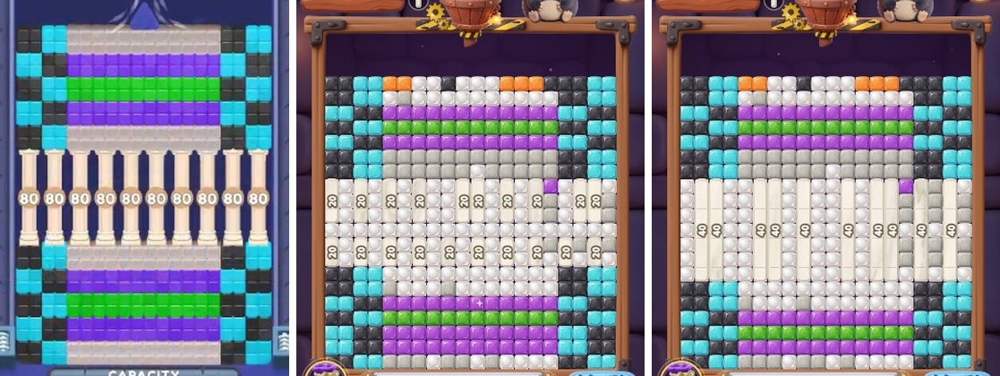
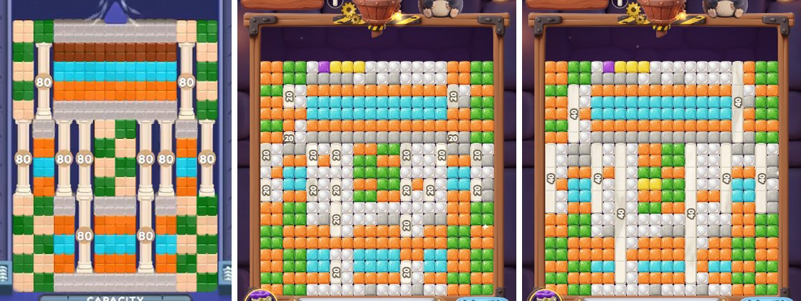
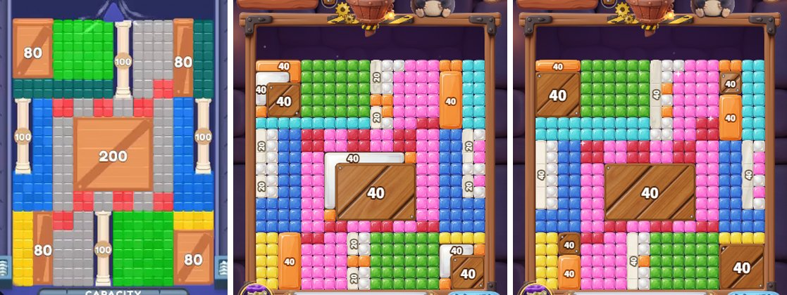
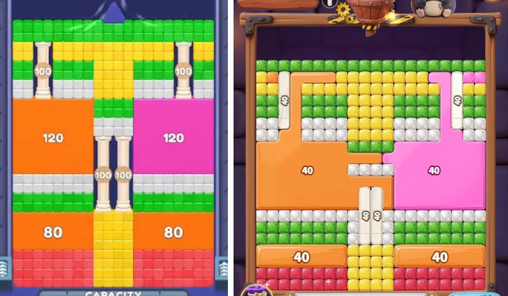
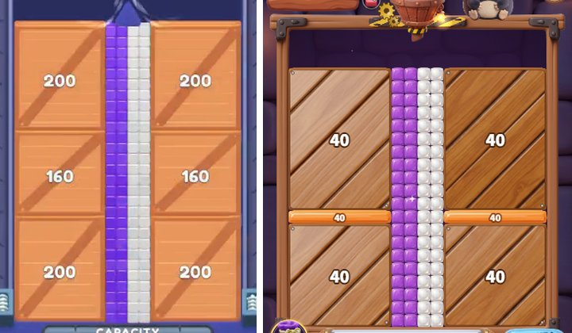
난이도: 기둥 · 덮개가 영상처럼 바뀌면서 메인 54판의 구조가 달라졌어요. 이 판들만 다시 맞췄어요(용량 · 여유 상자 · 색별 여유 · 숫자 배율). 나머지 146판과 실험실은 그대로예요(정의 바이트 비교).
게임 지도 화면을 이걸로 바꿨어요. 길은 위에서 아래로 내려가고, 깊어질수록 땅 색이 짙어져요(지층 6개마다 색이 바뀌어요). 핍은 지금 판 옆에서 곡괭이질을 해요. 오른쪽 막대는 「지하 n층」이에요. 위아래로 끌면 지난 판 · 다음 판을 볼 수 있고, 지난 판은 눌러서 다시 할 수 있어요. 아래 탭은 상점(준비 중) · 광산 · 실험실이에요(시안의 「도감」 자리에 실험실을 뒀어요).
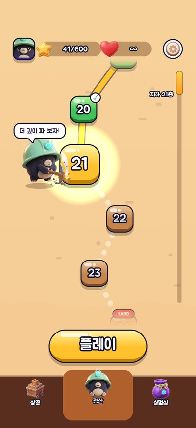
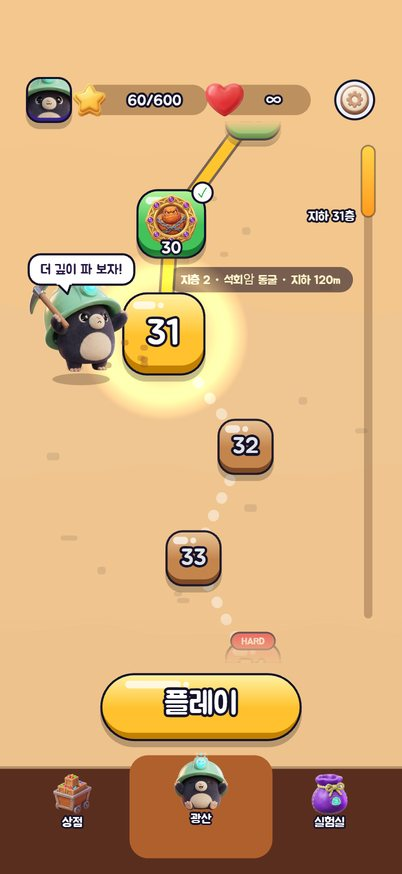
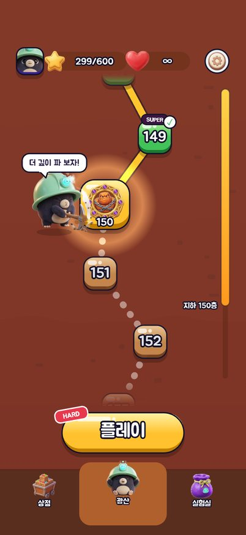
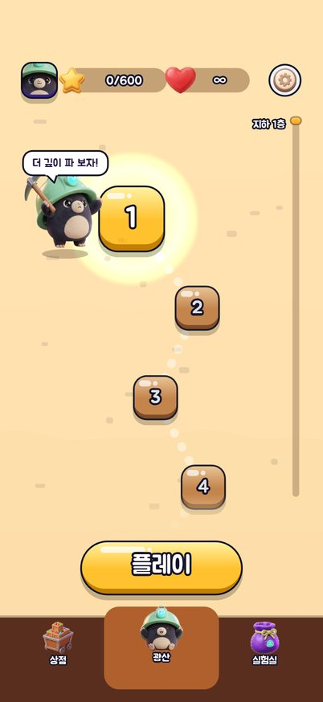
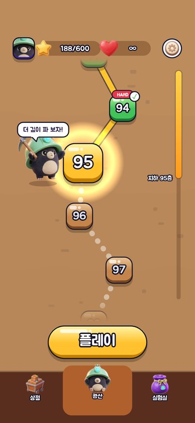
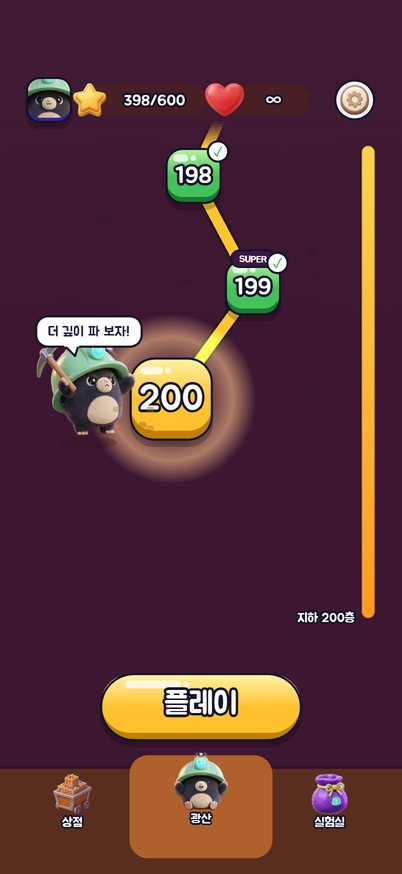
밝은 4색(하늘 · 민트 · 크림 · 사탕)을 판마다 돌려 써요. HARD는 짙은 다홍(불씨), SUPER HARD와 보스는 밤(가장 어두운 색)이에요. 원작이 HARD는 붉은 UI, SUPER HARD는 검은 UI인 것과 같은 약속이라, 판에 들어서는 순간 색으로 어려운 판인지 알 수 있어요. 지금은 클레이 화면인 실험실 「귀환 칸」 판(실험 48~53)에서 보여요. 클레이를 본편에 넣으면 같은 규칙이 그대로 적용돼요. 핍은 B(귀환 칸 옆)로 고정했어요.
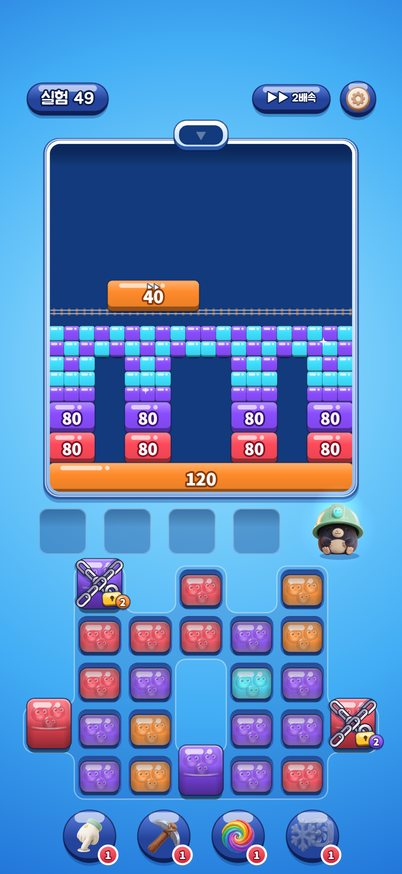
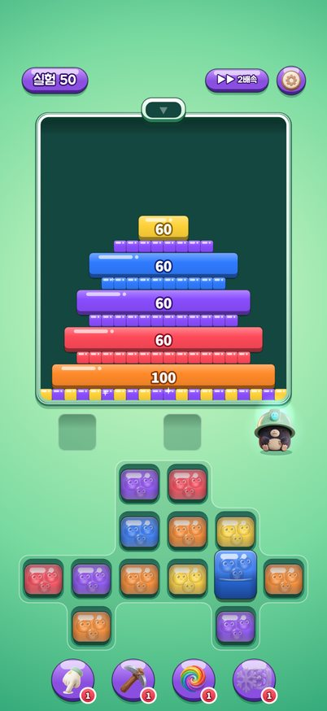
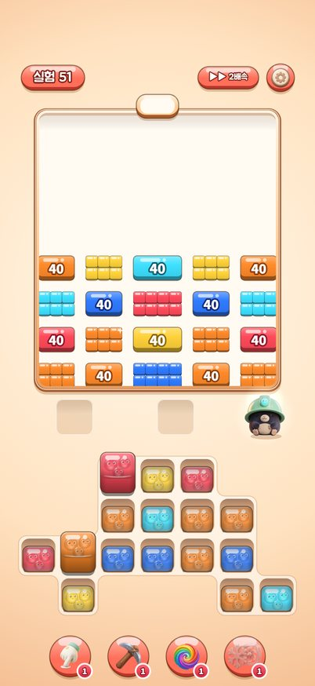
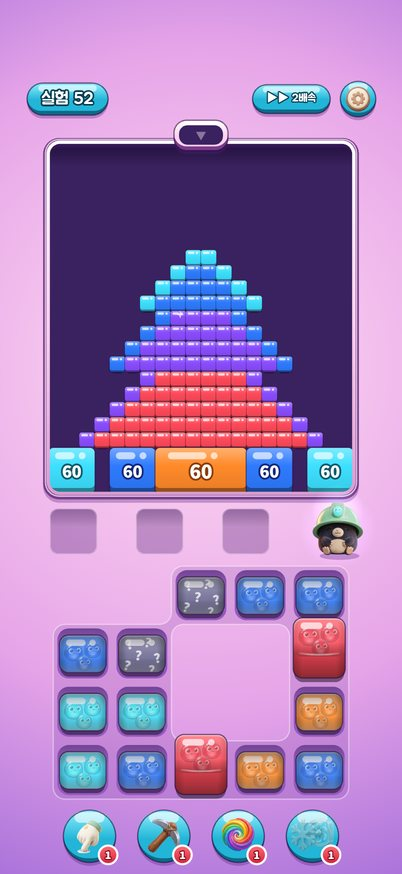
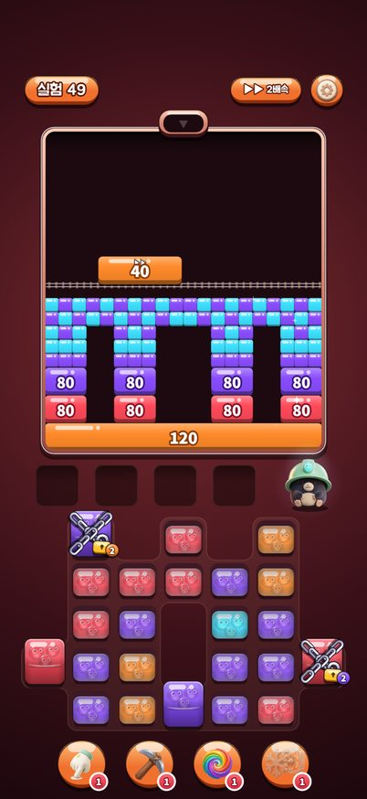
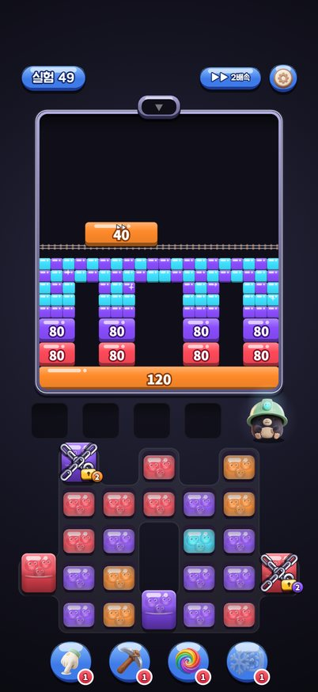
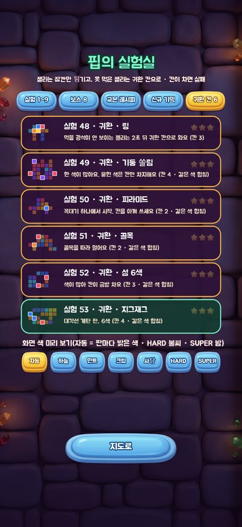